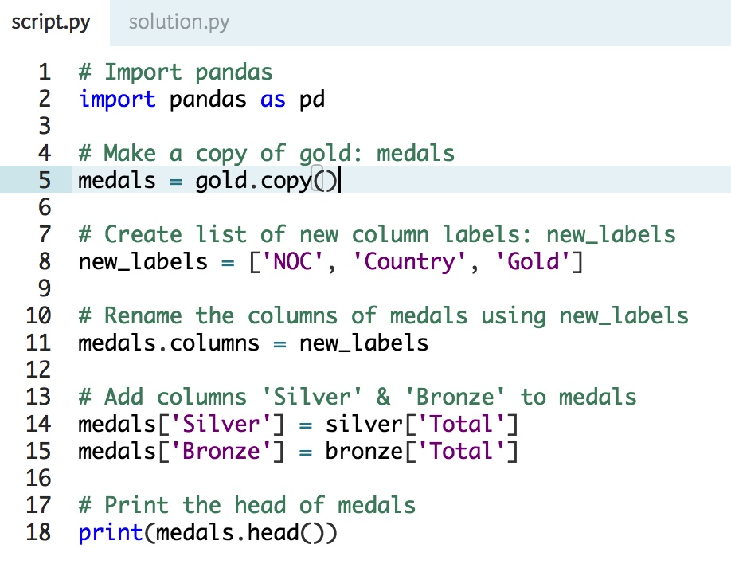
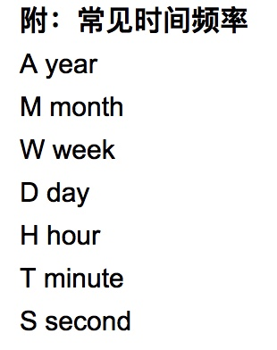

Tips-Pandas
reading multiple data files using a loop

Sorting DataFrame with the Index & columns

Reindexing using another DataFrame Index

Arithmetic with Series & DataFrames





pandas.read_json
pandas.read_json(path_or_buf=None, orient=None, typ='frame', dtype=True, convert_axes=True, convert_dates=True, keep_default_dates=True, numpy=False, precise_float=False, date_unit=None, encoding=None, lines=False)[source]Convert a JSON string to pandas object
Parameters: path_or_buf : a valid JSON string or file-like, default: None
The string could be a URL. Valid URL schemes include http, ftp, s3, and file. For file URLs, a host is expected. For instance, a local file could be
file://localhost/path/to/table.jsonorient : string,
Indication of expected JSON string format. Compatible JSON strings can be produced by
to_json()with a corresponding orient value. The set of possible orients is:'split': dict like{index -> [index], columns -> [columns], data ->[values]}'records': list like[{column -> value}, ... , {column -> value}]'index': dict like{index -> {column -> value}}'columns': dict like{column -> {index -> value}}'values': just the values array
The allowed and default values depend on the value of the typ parameter.
- when
typ == 'series',- allowed orients are
{'split','records','index'} - default is
'index' - The Series index must be unique for orient
'index'.
- allowed orients are
- when
typ == 'frame',- allowed orients are
{'split','records','index', 'columns','values'} - default is
'columns' - The DataFrame index must be unique for orients
'index'and'columns'. - The DataFrame columns must be unique for orients
'index','columns', and'records'.
- allowed orients are
typ : type of object to recover (series or frame), default ‘frame’
dtype : boolean or dict, default True
If True, infer dtypes, if a dict of column to dtype, then use those, if False, then don’t infer dtypes at all, applies only to the data.